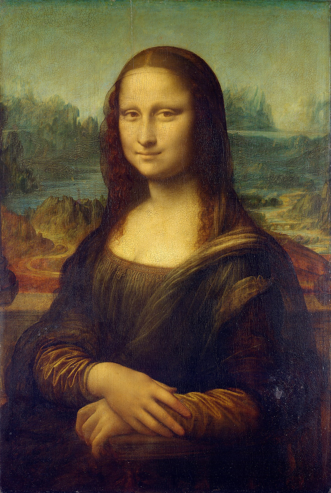

Virtual Gallery
Home
Course Overview
Artistic Periods
Famous Artists
Virtual Gallery
Feedback
Contact

Mona Lisa by Leonardo Da-Vinci
The Scream by Edvard Munch
David by Michelangelo
The Last Supper by Leonardo Da-Vinci
The Starry Night by Vincent van Gogh
Adam by Michelangelo
Persistence of Memory by Salvador Dalí
Birth of Venus by Sandro Botticelli